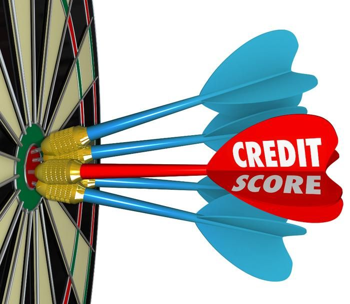

Credit scores and credit reports - Moneysmart.gov.au
- Credit Reports and Scores | USAGov
WalletHub is the best credit score site because it offers free scores that are updated on a daily basis. Sure, we’re obviously biased in saying that. But it’s hard to compete with the latest info, personalized credit analysis and custom credit card recommendations. - Get Your Credit Score | 100% Free, Easy and Online!
The credit score model was created by the Fair Isaac Corporation, also known as FICO, and it is used by financial institutions. While other credit-scoring systems exist, the FICO score is by far ... - Free Credit Score - No Credit Card Required - Experian
What is a good Credit Score? There are multiple credit scoring models which means that a good credit score can be different depending on the scoring model being used. Credit scores can range between 300 and 850. A good credit score generally starts at 700, and a score of 800 or above is considered excellent. - Credit Score: Definition, Factors, and How to Improve It
‘Credit Score’ in India is a defining aspect for all those applying for loans or credit cards at banks and other financial institutions. Credit aspirants are judged on this score which is assigned to them by credit bureaus such as CIBIL, Experian, Equifax, CRIF High Mark, etc.The score is a numerical representation of your creditworthiness. - Free Credit Score & Free Credit Reports With Monitoring ...
Credit score calculated based on FICO ® Score 8 model. Your lender or insurer may use a different FICO ® Score than FICO ® Score 8, or another type of credit score altogether. Learn more. - 2020’s Best Credit Score Site - WalletHub
The credit card offers that appear on this site are from credit card companies from which we may receive compensation. This compensation may impact how and where products appear on this site (including, for example, the order in which they appear). ... Improvements are calculated from your baseline credit score, as determined by Credit Sesame ... - creditscore.com: Free Credit Score - FICO Score
If you have specific questions about the accessibility of this site, or need assistance with using this site, contact us. Please call Member Support at (888) 882-9277 or email legal@creditkarma.com - Best Free Credit Score Websites | Cafe Credit
Check your free CIBIL Score and Report and apply for a customized loan. Banks check your CIBIL Score before approving your loan. - Credit Score - Check Free CIBIL Score, Get Credit Score ...
Depending on the credit reporting agency, your score will be between zero and either 1,000 or 1,200. The score relates to a five-point scale (excellent, very good, good, average and below average). This helps a lender work out how risky it is for them to lend to you. - How Can I Check My Credit Scores? | Equifax®
FICO ® Scores are developed by Fair Isaac Corporation. The FICO ® Score provided by ConsumerInfo.com, Inc., also referred to as Experian Consumer Services ("ECS"), in Experian CreditWorks SM, Credit Tracker SM and/or your free Experian membership (as applicable) is based on FICO ® Score 8, unless otherwise noted. Many but not all lenders use FICO ® Score 8.
Skip to main content ☰ back home search Banking and budgeting Banking Savings accounts Transaction accounts and debit cards Joint accounts Direct debits Unauthorised and mistaken transactions Banking and credit scams Identity theft Budgeting How to do a budget Track your spending Managing on a low income Budget planner Compound interest calculator Simple money manager Saving Savings goals calculator Compound interest Save for an emergency fund Simple ways to save money Term deposits Save for a house deposit Income tax GST calculator Income tax calculator Salary packaging Lodging a tax return Loans, credit and debt Loans Going guarantor on a loan Car loans Loan rejection Payday loans No or low interest loans Personal loans Personal loan calculator Payday loan calculator Moneysmart cars app Credit cards Choosing a credit card Pay off your credit card Credit card calculator Credit card balance transfers Cancel a credit card Home loans Choosing a home loan Mortgage calculator Switching home loans Mortgage switching calculator Using a mortgage broker Pay off your mortgage faster Problems paying your mortgage Interest-only home loans Interest-only mortgage calculator Keeping your mortgage on track Managing debt Get debt under control Urgent help with money Financial counselling Problems paying your bills and fines Credit scores and credit reports Credit repair Debt consolidation and refinancing Dealing with debt collectors Repossessed car or goods Bankruptcy and debt agreements Free legal advice Net worth calculator Financial hardship Investing and planning How to invest Investor toolkit Develop an investing plan Choose your investments Diversification Investing and tax Borrowing to invest Keep track of your investments Financial advice Financial advisers register Choosing a financial adviser Working with a financial adviser Financial advice costs Problems with a financial adviser Shares Choosing shares to buy How to buy and sell shares Keeping track of your shares Employee share schemes Managed funds and ETFs Managed funds fee calculator Choosing a managed fund Exchange traded funds (ETFs) Hedge funds Listed investment companies (LICs) Peer to peer lending Property investment Property schemes Timeshares SMSFs and property Investments paying interest Bonds Debentures, secured and unsecured notes Hybrid securities and notes Investment warnings Investment scams Cryptocurrencies and ICOs Investment seminars Binary options Land banking Ponzi schemes Company director fraud Forex trading Super and retirement How super works Choosing a super fund Types of super funds Self-managed super funds (SMSF) Getting your super Find lost super Consolidating super funds Tax and super Superannuation scams Superannuation calculator MySuper funds list Grow your super Employer contributions calculator How much super you need Super contributions Super for self-employed people Super investment options Super contributions optimiser Retirement income Age Pension and government benefits Super and pension age calculator Transition to retirement Retirement planner Account-based pensions Account-based pension calculator Annuities Super lump sum Retirement income and tax Downsizing in retirement Reverse mortgage and home equity release Reverse mortgage calculator Insurance How life insurance works Life insurance calculator Income protection insurance Life cover Total and permanent disability (TPD) insurance Insurance through super Life insurance claims comparison tool Trauma insurance Making a life insurance claim Car insurance Choosing car insurance Claiming on your car insurance No claim bonus on car insurance Add-on insurance Home insurance Choosing home insurance Contents insurance Storm, flood and fire insurance Health insurance Funeral insurance Pet insurance Mobile phone, tablet and laptop insurance Travel insurance Consumer credit insurance Moneysmart for teachers About Moneysmart for teachers Teaching resources Professional development for teachers Moneysmart in schools About us Contact us Glossary Media centre Like MoneySmart on Facebook Follow MoneySmart on Twitter Subscribe to MoneySmart on Youtube Managing debt
Credit scores and credit reports
Check your credit score and credit report for free
Page reading time: 4 minutes
On this pageLenders use your credit score (or credit rating) to decide whether to give you credit or lend you money. Knowing this can help you negotiate better deals, or understand why a lender rejected you.
Your credit score is based on personal and financial information about you that's kept in your credit report.
You have the right to access your credit score and credit report for free.
If you want to fix something in your credit report, see credit repair .
Get your credit score for free
You can get your credit score for free from an online credit score provider, usually within minutes. When you sign up, you agree to their privacy policy, which lets them use your personal information for marketing. You can opt out of this after you sign up.
Avoid any provider that asks you to pay or give them your credit card details.
How your score is calculated
Your credit score is calculated based on what's in your credit report. For example:
the amount of money you’ve borrowed the number of credit applications you’ve made whether you pay on timeDepending on the credit reporting agency, your score will be between zero and either 1,000 or 1,200.
The score relates to a five-point scale (excellent, very good, good, average and below average). This helps a lender work out how risky it is for them to lend to you.
A higher score means the lender will consider you less risky. This could mean getting a better deal and saving money.
A lower score will affect your ability to get a loan or credit. See how to improve your credit score .
Get your credit report for free
If you've ever applied for credit or a loan, there will be a credit report about you.
It's worth getting a copy of your credit report once a year. You can do this for free if you can wait 10 days to get it.
You may have to pay if:
you want a copy in less than than 10 days you ask for more than one copy in a yearContact these credit reporting agencies for a copy of your credit report:
Equifax CheckYourCredit (illion) ExperianSince different agencies can hold different information, you may have a credit report with more than one agency.
What's in a credit report
As well as personal information — like your name, date of birth, address and driver's licence number — your credit report will include all of the following information.
To see how a repayment deferral may impact your credit report see The Australian Retail Credit Association's (ARCA's) information sheet .
Credit products
toggle accordian rowFor each credit product you've held in the last two years:
type of credit product (such as credit card, store card, home loan, personal loan, business loan) credit provider credit limit opening and closing dates of the account joint applicant's name, if anyRepayment history
toggle accordian rowFor each credit product you've held in the last two years:
repayment amount when payments were due how often you paid and if you paid by the due date missed payments (not made within 14 days of the due date), and if and when you made themDefaults on utility bills, credit cards and loans
toggle accordian rowYour service provider may report your non-payment of a debt (called a 'default') to a credit reporting agency. They must notify you before they do so.
This may include defaults on your utility and phone bills.
A service provider can report a default if:
the amount owed is $150 or more, and your service provider can't contact you (called a clearout ), and 60 days or more have passed since the due date, and the service provider has asked you to pay the debt either by phone or in writingA default stays on your credit report for:
five years seven years in the case of a clearoutIf you pay the debt, your credit report will still list the default, but it will also show that you've paid it.
Credit applications
toggle accordian rowIf you've applied for credit before:
number of applications you’ve made total amount of credit you’ve borrowed any loans you’ve guaranteedBankruptcy and debt agreements
toggle accordian rowAny bankruptcies or debt agreements, court judgments, or personal insolvency agreements in your name.
Credit report requests
toggle accordian rowAny requests for your credit report that have been made by credit providers.
Fix mistakes in your credit report
When you get your credit report, check that:
all the loans and debts listed are yours details such as your name and date of birth are correctIf something is wrong or out of date, contact the credit reporting agency and ask them to fix it. This is a free service.
Some companies may try to charge you to get all negative information removed from your credit report. The only thing they can ask the credit reporting agency to remove is wrong information. And you can do that yourself — see credit repair .
If there are loans or debts in your report that you know nothing about, it could mean someone has stolen your identity. See identity theft for what to do.
Do you find this page useful? Yes No Why? It had the information I was looking for The page makes sense The information is balanced and unbiased The information gave me a sense of what to do next Submit Any other feedback Why not? It didn't have the information I was looking for The page was confusing The information overwhelmed me There wasn't enough information for me to take action Submit Any other feedback Your feedback Your feedback relates to: Please select... Webpage Content Calculator or tool Complaint or scam Copyright requests Loans, money and personal finance advice Other feedback/suggestion You would like to: Please select... Report an Error Comment on a Webpage Ask a question Your issue is: Please select... You don't understand the calculator result You believe the calculator is incorrect The calculator/tool does not work (eg technical issue) You want to provide general feedback/suggestionsCalculator disclaimers and assumptions can be found under each calculator. Refer to these for more detailed information about how a specific calculator works.
Calculator frequently asked questions can be found under most calculators. Refer to these for more information.
The links below provide more information on complaints and reporting scams:
Complain about a financial product or service Report a scam Report misconduct to ASICWe don't lend money, arrange loans or provide personal financial advice.
If you are experiencing difficulties with money, the following pages can help:
Urgent help with money No or low interest loans Problems paying your bills or fines Problems paying your mortgage Find a financial counsellor Summary of your feedback (helps us respond faster): Your comments: The page/calculator/app you are referring to (eg. cut/paste URL): Your email address: (if you require a reply) Cancel Send feedbackUp next in Managing debt
Get debt under control
How to prioritise and manage debt
2 min read
Urgent help with money
Where to get help if you re in crisis or struggling to make ends meet
2 min read
Financial counselling
Free help to sort out your money problems
2 min read
Problems paying your bills and fines
Understand your options and how to get help
4 min read
Credit repair
Don t pay to fix your credit report — do it yourself for free
2 min read
Debt consolidation and refinancing
Know the risks and make sure you will save money
3 min read
Dealing with debt collectors
Know your rights, what to do and how to get help
4 min read
Repossessed car or goods
Act fast and get help to avoid repossession
3 min read
Bankruptcy and debt agreements
Get advice and understand the risks first
3 min read
Free legal advice
If you’re facing legal action, you can get free legal advice
2 min read
Net worth calculator
Work out your financial position
5 min read
Financial hardship
How to navigate your way through debt and financial hardship
3 min read
About us Contact us Glossary Media centre Subscribe Indigenous Like MoneySmart on Facebook Follow MoneySmart on Twitter Subscribe to MoneySmart on Youtube search

Mauris vulputate dolor
Rutrum fermentum nibh in augue praesent urna congue rutrum.
Etiam posuere